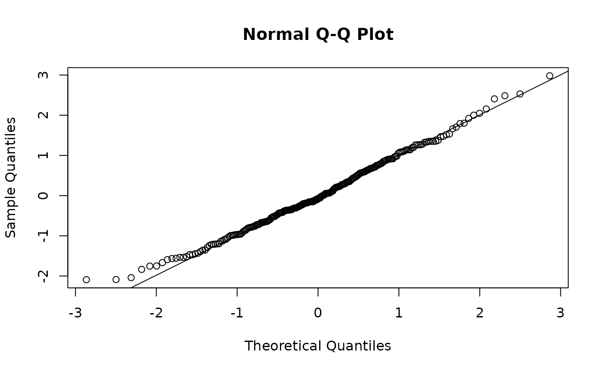

Residuals of a "brs" fit. Randomized quantile residuals
(type = "rqr") use the censoring of each observation and are the
recommended ones; the other types are evaluated at one point of the cell
(see Details).
Details
Let \((a_i, b_i)\) be the fitted shapes, \(\hat\mu_i = a_i/(a_i + b_i)\)
the fitted mean and \(V_i\) the fitted variance (brs_repar).
All types except "rqr" use \(y_i =\) yt, the centre of the
cell: \(s/K\) under interval = "mid", so that the border scores
sit at \(10^{-5}\) and \(1 - 10^{-5}\), and \((s + 0.5)/(K + 1)\)
under "right"/"left"; exact values are used as they are. This
is the midpoint convention of Lopes (2023, "Analise de residuos"); it makes
these residuals unreliable at the borders of the scale.
"response"\(y_i - \hat\mu_i\).
"pearson"\((y_i - \hat\mu_i)/\sqrt{V_i}\). Lopes (2023) writes \(V_i\) as \(\mu(1 - \mu)/(1 + \phi)\) (parameterisation 1); it is the same variance under every
repar."deviance"\(\mathrm{sign}(y_i - \hat\mu_i) \sqrt{|2\{\ell_i(y_i) - \ell_i(\hat\mu_i)\}|}\), where \(\ell_i(m)\) is the beta log-density at \(y_i\) with mean \(m\) and precision \(a_i + b_i\) (Ferrari and Cribari-Neto, 2004). The saturated mean is taken as \(y_i\), as in betareg. For a small precision (U- or J-shaped densities) \(\ell_i(y_i)\) can be below \(\ell_i(\hat\mu_i)\); the absolute value is then used and only the sign carries information.
"rqr"\(\Phi^{-1}(u_i)\), with \(u_i\) uniform on \((F(l_i), F(u_i))\) for \(\delta_i = 3\), on \((0, F(u_i))\) for \(\delta_i = 1\) and on \((F(l_i), 1)\) for \(\delta_i = 2\), and \(u_i = F(y_i)\) for exact values (Dunn and Smyth, 1996); \(u_i\) is kept in \([10^{-10}, 1 - 10^{-10}]\). They are standard normal under the model whatever the censoring. They are random: set a seed to reproduce them;
summary()draws them without changing the caller's RNG state."weighted","sweighted"\((y_i^* - \mu_i^*)/ \sqrt{(a_i + b_i) v_i}\) and \((y_i^* - \mu_i^*)/\sqrt{v_i}\), with \(y_i^* = \mathrm{logit}(y_i)\), \(\mu_i^* = \psi(a_i) - \psi(b_i)\) and \(v_i = \psi'(a_i) + \psi'(b_i)\) (Espinheira, Ferrari and Cribari-Neto, 2008).
Lopes (2023) also recommends the adjusted quantile residuals of Pereira (2019), which are not implemented.
References
Lopes, J. E. (2023). Modelos de regressao beta para dados de escala. Master's dissertation, Universidade Federal do Parana, Curitiba. URI: https://hdl.handle.net/1884/86624.
Dunn, P. K., and Smyth, G. K. (1996). Randomized quantile residuals. Journal of Computational and Graphical Statistics, 5(3), 236–244.
Espinheira, P. L., Ferrari, S. L. P., and Cribari-Neto, F. (2008). On beta regression residuals. Journal of Applied Statistics, 35(4), 407–419.
Ferrari, S. L. P., and Cribari-Neto, F. (2004). Beta regression for modelling rates and proportions. Journal of Applied Statistics, 31(7), 799–815. doi:10.1080/0266476042000214501
Pereira, G. H. A. (2019). On quantile residuals in beta regression. Communications in Statistics - Simulation and Computation, 48(1), 302–316.
Examples
# Synthetic NRS-11 scores: 3 post-operative times. Simulated, not real data.
set.seed(2023)
nrs <- data.frame(time = factor(rep(c("6h", "12h", "24h"), each = 80),
levels = c("6h", "12h", "24h")))
shp <- brs_repar(mu = plogis(-1.3 + c(0, 0.75, 0.3)[nrs$time]), phi = 0.3,
repar = 2)
nrs$y <- round(10 * rbeta(nrow(nrs), shp$shape1, shp$shape2))
fit <- brs(y ~ time, data = nrs, ncuts = 10)
# Randomized quantile residuals: approximately N(0, 1), borders included
set.seed(1)
r_q <- residuals(fit, type = "rqr")
qqnorm(r_q); qqline(r_q)

# Midpoint-based residuals are extreme at the border scores 0 and 10
r_p <- residuals(fit, type = "pearson")
tapply(r_p, cut(nrs$y, c(-1, 0, 9, 10), labels = c("0", "1-9", "10")), mean)
#> 0 1-9 10
#> -1.0762665 0.2507079 2.5712711